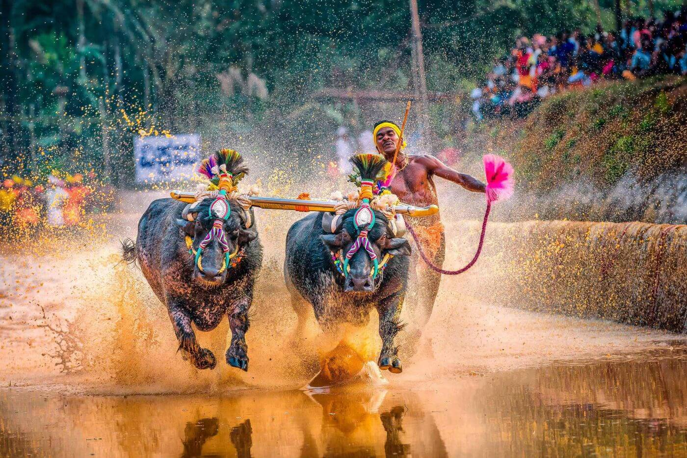

COASTAL KARNATAKA
Explore Karavali
Where the Western Ghats meet the Arabian Sea.
Discover beaches, temples, traditions, festivals and flavours that make the coast of Karnataka unforgettable.
More Than A Destination
Karavali is Karnataka's western coastal belt, shaped by the Arabian Sea, coconut groves, rivers, temples, paddy fields and centuries of cultural traditions. Mangaluru and Udupi form two of its most fascinating centres.
The Coast
Golden beaches, islands, fishing communities and sunsets along the Arabian Sea.
Faith
Ancient temples, sacred traditions and spiritual centres that continue to shape coastal life.
Culture
Yakshagana, Kambala, Bhoota Kola, Huli Vesha and other living traditions of the coast.
Flavours
Rice, coconut, spices, seafood and vegetarian traditions come together in Karavali cuisine.
Mangaluru & Udupi



Stories That Are Still Alive
The coast is not only about beautiful places. Its identity lives through performances, rituals, festivals and community traditions passed from generation to generation.
Every Dish Tells A Story
From delicate neer dosa to spicy kori gassi and traditional Udupi meals, coastal cuisine reflects the land, people and traditions of Karavali.
Explore Karavali Cuisine


Yakshagana
Dance, theatre, music and mythology.
Kambala
The thunder of the paddy fields.
Bhoota Kola
Ritual, memory and community.
Huli Vesha
The vibrant tiger dance of the coast.
YOUR KARAVALI JOURNEY
The Coast Is Waiting.
Beaches. Temples. Food. Culture. Memories.
Start Exploring